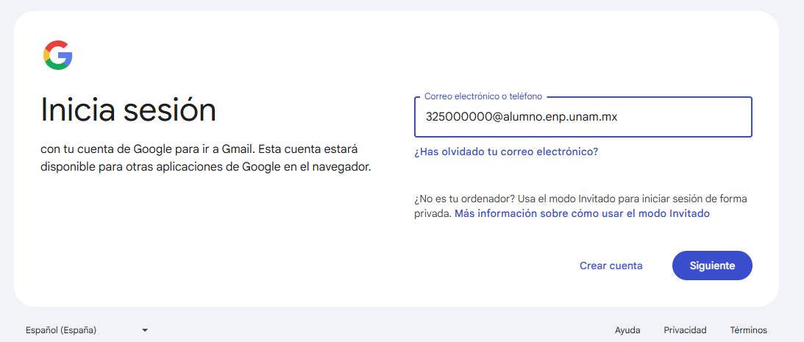
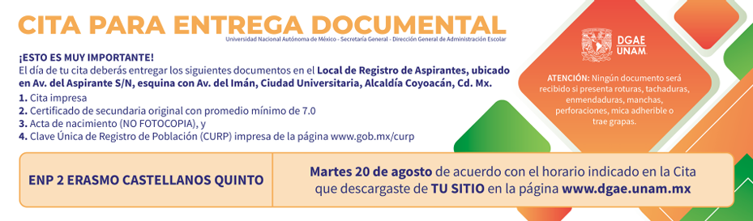

Proceso de Inscripción 2025-2026
Descargar documento: Inscripción
El proceso de inscripción para primer ingreso (estudiantes que ingresan por COMIPEMS) y cambio de ciclo (estudiantes de iniciación que pasan de 3° a 4°) para ciclo escolar 2025-2026 se realizará del ¿? al ¿? de agosto del 2025, por lo que les solicitamos leer con atención cada uno de los números que integran el proceso de inscripción.
Notas importantes:
- Lee completamente y con atención el documento PROCESO DE INSCRIPCIÓN DE PRIMER INGRESO Y CAMBIO DE CICLO ya que en éste se detalla cada paso a seguir durante el proceso de inscripción.
- Únicamente se habilitarán los pasos en las fechas establecidas en el cronograma, por lo que es responsabilidad del estudiante leer detenidamente y con atención:
La asignación de grupos se realiza de manera computarizada. El sistema busca que se cumplan los siguientes criterios:
- Respetando el artículo 34 del Reglamento General de Inscripciones.
- Todos los grupos deben ser equilibrados respecto al número de estudiantes.
- La asignación se realizará de forma estricta para buscar tener un número equilibrado de estudiantes en todos los grupos y con ello, poder atender las medidas sanitarias.
MUY IMPORTANTE
La Universidad entenderá con fundamento en el Artículo 29 del Reglamento General de Inscripciones que todo aquel aspirante asignado que no obtenga su documentación o no formalice su inscripción en el plantel, renuncia a ésta, por lo cual quedará cancelado su trámite de ingreso de forma definitiva.
NO habrá prórroga, por lo tanto NO se podrá realizar el proceso en fechas diferentes a las establecidas en el cronograma.
Nota:
Los estudiantes que pasan de Iniciación Universitaria a Prepa que adeuden alguna asignatura, de cualquier grado del plan de estudios de iniciación, NO podrán realizar su pase a Bachillerato.
Inicio de Clases: ? de agosto del 2025
Paso 1 - ? DE AGOSTO
Revisión en sistema
| Estudiante de iniciación de cambio de ciclo (Pasa de 3° a 4°) | Estudiante que ingresa por COMIPEMS |
|---|---|
|
1. Revisión en sistema para estudiantes de Cambio de
ciclo, el ¿? de agosto. Ingresa a la página de control escolar http://escolares.prepa2.unam.mx/ y da clic en Paso 1. Revisión cambio de ciclo. El usuario es tu número de cuenta y el password es tu fecha de nacimiento con el formato ddmmaaaa. Al realizar este proceso, confirmarás tu intención de completar tu proceso de inscripción a nivel bachillerato que iniciaste en el mes de marzo con el registro de Cambio de Ciclo. Sólo debes ingresar y seguir el proceso que te establezca el sistema. NOTA: El sistema te otorgará un comprobante que deberás descargar, guardar e imprimir, ya que lo deberás presentar en la credencialización. |
1. Descarga del sistema la documentación de asignación,
el 9 de agosto. Ingresa https://www.escolar.unam.mx/ y deberás proporcionar al sistema:
La información que captures es muy importante para los procesos de otorgamiento de grupo, becas y planeación por lo que los datos que proporciones deben ser reales. |
Paso 2 - ? DE AGOSTO
Captura de datos
Estudiantes de iniciación de cambio de ciclo (Pasa de 3° a 4°) y estudiantes que ingresan por COMIPEMS, deberán realizar este paso.
2. Captura de datos personales
Ingresa a la página de control escolar:
http://escolares.prepa2.unam.mx/
El usuario es tu número de cuenta y el password
es tu fecha de nacimiento con el formato
ddmmaaaa. Da clic en “Captura de datos personales”.
Es muy importante que la información que proporciones sea verídica, ya que será el medio de contacto de la institución contigo.
Información requerida
Es importante que tengas a la mano la siguiente información, ya que te será solicitada por el sistema:
- CURP del estudiante
-
Correo electrónico institucional
(numdecuenta@alumno.enp.unam.mx) - Correo electrónico alternativo de Gmail del estudiante
- CURP de tu padre, madre o tutor
- CURP de una persona de contacto
Paso 3 - ? DE AGOSTO
Credencialización y Entrega de Carta Asignación
| Estudiante de iniciación de cambio de ciclo (Pasa de 3° a 4°) |
Estudiante que ingresa por COMIPEMS |
|---|---|
3. CREDENCIALIZACIÓNAsiste al plantel ENP2, acude a las ventanillas 4, 5 y 6 de servicios escolares con el comprobante que te proporcionó el sistema de control escolar en el paso 1, para que te sellen el documento y posteriormente acude al salón que te indiquen para la toma de fotografía para la credencial del plantel, el día que corresponda según la letra inicial de tu apellido paterno y tu turno. Fechas y Horarios:
|
3. Entrega de CARTA ASIGNACIÓN
Fechas y Horarios:
3.1 CREDENCIALIZACIÓNDespués de entregar tu carta de asignación, dirígete el mismo día al salón que te indiquen para la toma de fotografía para la credencial del plantel. Nota: Para la credencialización deberás presentar tu Carta de asignación que dice "ALUMNO". |
Estudiantes rezagados (5° y 6° grado):
La credencialización de estudiantes rezagados se realizará el ¿? de agosto en el siguiente horario:
- Horario matutino: 11:00 a 13:30
- Horario vespertino: 18:00 a 20:00
Deberán presentar el formato de credencial emitido por el sistema de reinscripción.
Paso 4 - ? DE AGOSTO
Bienvenidas
Estudiantes de iniciación de cambio de ciclo (Pasa de 3° a 4°) y Estudiantes que ingresan por COMIPEMS, deberán realizar este paso.
4. Ceremonia de Bienvenida
Revisa el horario en el que debes presentarte de acuerdo con la información publicada en el enlace de abajo.
Recuerda que solo podrás entrar con dos acompañantes por cuestiones de cupo.
4.1 Examen diagnóstico de conocimientos de ingreso a bachillerato
Estudiantes de iniciación de cambio de ciclo (Pasa de 3° a 4°) y Estudiantes que ingresan por COMIPEMS, deberán realizar este paso.
Deberás ingresar el ¿?, ¿? o ¿? de agosto al siguiente enlace:
Accede al examen diagnóstico aquí.
El examen tiene una duración aproximada de 3 horas y estará disponible de 9:00 a 18:00 horas, a través del siguiente vínculo. (Se activará en la fecha señalada)
Accede al examen diagnóstico aquí.
Consulta el manual del estudiante del examen diagnóstico:
Recomendaciones para los estudiantes:
- Contar con un equipo de cómputo y conexión a internet.
- Tener acceso a cualquiera de los siguientes navegadores: Google Chrome y Mozilla Firefox.
- Para ingresar al sistema de captura de datos personales, el sistema solicitará número de cuenta (sin guión) y como contraseña la fecha de nacimiento en el formato ddmmaaaa (ejemplo: 12022005).
- Ingresar al sistema los días y horarios establecidos.
- Estar solo en el espacio en el que va a realizar el examen y no contar con otros dispositivos electrónicos.
- Leer con detenimiento las instrucciones del examen.
- Anotar el código de desbloqueo.
- Contar con una hoja y lápiz para poder realizar los cálculos matemáticos requeridos.
Evitar realizar actividades fuera de la pantalla del examen, ya que no está permitido. En este caso el estudiante será notificado.
En caso de requerir apoyo técnico:
Deberás enviar un mensaje al correo electrónico: monica.gonzalez@dgenp.unam.mx indicando tu número de cuenta, nombre completo, fecha de nacimiento, así como el problema que tienes para realizar el examen.
Horario de atención en el correo: ¿?, ¿? y ¿? de 09:00 a 18:00 horas.
Paso 5 - ? DE AGOSTO
5. Examen Médico Automatizado EMA
Estudiantes de iniciación de cambio de ciclo (Pasa de 3° a 4°) y Estudiantes que ingresan por COMIPEMS, deberán realizar este paso.
Para realizar el Examen Médico Automatizado (EMA) que aplicará la Dirección General de Atención a la Salud (DGAS), deberás acudir al plantel el día ¿? de agosto de acuerdo con el horario y listado que se publicará el día ¿? de agosto en la página web del plantel http://prepa2.unam.mx/.
Deberás llevar:
- Lápiz del número 2
- Pluma de tinta negra o azul
- Una tabla o cuaderno para que puedas apoyarte.
Se publicará el día 14 de agosto el horario y listados en la página web del plantel http://www.prepa2.unam.mx/.
5.1 Ingreso a correo electrónico institucional – ¿? agosto
Únicamente los Estudiantes que ingresan por COMIPEMS, deberán realizar este paso. Estudiantes de cambio de ciclo no realizan este paso.
La Dirección General de la Escuela Nacional Preparatoria generará a sus estudiantes de nuevo ingreso cuentas de correo institucionales que serán utilizadas a lo largo del ciclo escolar. Dicho correo electrónico estará conformado de la siguiente manera:
numero_de_cuenta_del_estudiante@alumno.enp.unam.mx
Ejemplo: 325000000@alumno.enp.unam.mx
Para tener acceso a esta cuenta, el alumno deberá ingresar a la página web de Gmail e iniciar sesión como usuario registrado como se muestra en la siguiente imagen:
Importante
Como contraseña deberá utilizar por única vez su fecha de nacimiento en el formato ddmmaaaa (ejemplo: 12022005), una vez que hayas ingresado al correo, te pedirá cambiar la contraseña.
5.2 Imprime comprobante de inscripción nuevo ingreso – ¿? de agosto
Estudiantes de iniciación de cambio de ciclo (Pasa de 3° a 4°) y Estudiantes que ingresan por COMIPEMS, deberán realizar este paso.
Ingresa a la página de control escolar http://escolares.prepa2.unam.mx/
El usuario es tu número de cuenta y el password es tu fecha de nacimiento con el formato ddmmaaaa. Da clic en “Paso 5.2 Imprime comprobante de inscripción” y sigue los pasos que te indique el sistema.
Nota: Los documentos que obtendrás en el paso 5.2 son:
- Comprobante de inscripción nuevo ingreso
- Carta compromiso
- Carta de recomendaciones a los tutores
- Mapa del plantel
IMPORTANTE: Si no realizas la Captura de datos personales no podrás descargar tu comprobante de inscripción.
Revisa el horario del grupo asignado en:
Horarios
Paso 6 - ? DE AGOSTO
Carga documentos
Estudiantes de iniciación de cambio de ciclo (Pasa de 3° a 4°) y Estudiantes que ingresan por COMIPEMS, deberán realizar este paso.
6. Carga de documentos
Ingresa a la página de control escolar: http://escolares.prepa2.unam.mx/
Usuario: tu número de cuenta
Password: tu fecha de nacimiento en formato ddmmaaaa
Da clic en “6. Carga de documentos” y sigue las instrucciones del sistema.
Requisitos de Documentación
Deberás cargar cada documento por separado en formato PDF en el enlace correspondiente.
- 1. Comprobante de inscripción: Otorgado por el sistema en el PASO 5.2 (una sola página).
- 2. Recibo telefónico: No mayor a 3 meses de antigüedad. Solo la carátula con datos y número telefónico. NO se aceptan recibos prediales o de luz. (una sola página).
- 3. Carta compromiso: Firmada por estudiante y tutor con bolígrafo azul. Digitalizar y subir al sistema (una sola página).
- 4. Carta de asignación: Solo para estudiantes que ingresan por COMIPEMS (una sola página).
Consideraciones Importantes
- Los archivos deben estar en formato PDF y no deben exceder los 250Kb por archivo.
- Los documentos solo se pueden subir una vez y no se pueden modificar.
Puedes consultar algunas opciones de aplicaciones para celular en este
enlace.
Puedes consultar un compresor de archivos en este
enlace.
Si tienes algún problema con la carga de tus documentos, acude a ventanillas de servicios escolares de acuerdo con tu turno en el siguiente horario:
- Lunes a viernes
Matutino 09:00 a 13:00
Vespertino 16:00 a 20:00
Paso 7 - ? DE AGOSTO
Entrega de documentos COMIPEMS
Estudiantes que ingresan por COMIPEMS, deberán realizar este paso.
De acuerdo con la fecha y horario indicado en la cita, la entrega de documentos originales se realiza EXCLUSIVAMENTE en el local de registro de aspirantes.
SIN EXCEPCIÓN, deberán contar con Certificado de Secundaria con promedio mínimo de 7.0 y cumplir los trámites señalados en el Aviso de entrega de documentación en Ciudad Universitaria, que señala:
“Este trámite podrá realizarlo tu padre o tutor, no es necesario que acudas.”
Importante
NO habrá prórroga para realizar estos trámites.
Una vez que hayas realizado la entrega de documentación original, deberás acudir a ventanillas de servicios escolares del plantel a entregar copia del comprobante de la entrega de documentos ante DGAE para verificar que ya se cumplió este paso.
Importante
La Universidad entenderá, con fundamento en el Art. 29 del Reglamento General de Inscripciones, que todo aquel aspirante asignado que no obtenga su documentación o no formalice su inscripción en el plantel y la entrega documental en Ciudad Universitaria, renuncia a ésta, por lo cual quedará cancelado su trámite de ingreso en forma definitiva.
NOTA:
Si pasas de Iniciación Universitaria a bachillerato,
NO realizarás
este punto.
Paso 8 - ? DE AGOSTO
Pago de inscripción
Para realizar el pago de reinscripción lo puedes realizar del ¿? al ¿? de agosto, conforme al Reglamento General de Pagos vigente, se tienen las siguientes alternativas:
- Pago en ventanillas: Ubicadas en la zona comercial de Ciudad Universitaria, costado sur de la Torre de Rectoría, en el horario y medidas establecidas.
- Pago en el área de caja del plantel:
- Matutino: Lunes a viernes 9:30 a 13:00 y 13:30 a 15:00 hrs.
- Vespertino: Lunes a jueves 17:05 a 19:30, viernes 17:05 a 19:00 hrs.
- Transferencia o ventanilla bancaria: A través de los siguientes convenios y CLABE interbancarias:
| Banco | Ventanilla, cajeros y mismo banco | CLABE Interbancaria |
|---|---|---|
| SCOTIABANK, S.A. | Convenio 3751 | No disponible |
| SANTANDER, S.A. | Convenio 6102 | 014180655015221193 |
| BBVA, S.A. | Convenio 1300962 | 012914002013009620 |
Notas:
- Si el pago se realiza a través de institución bancaria, en "REFERENCIA" deberás indicar al cajero tu número de cuenta (sin guion).
- Si el pago se realiza por transferencia electrónica, coloca en el campo “CONCEPTO” de tu banca electrónica el número de cuenta (sin guion). Si es requerido en "REFERENCIA", escribe la cadena 9999 o 999999 dependiendo de tu banco.
- La cantidad mínima aceptada para el concepto de "Pago de inscripción" es de $100.00 M.N. (cien pesos mexicanos).
Registro a Asignatura Educación Estética IV
El plan de estudios de la Escuela Nacional Preparatoria marca la asignatura de educación estética y artística IV como OBLIGATORIA.
En el plantel se imparten las siguientes actividades estética:
- Coro
- Danza contemporánea
- Danza española
- Danza regional
- Estudiantina
- Fotografía
- Grabado
- Guitarra clásica
- Orquesta
- Pintura
- Rondalla
- Teatro
Esta asignatura la deberás registrar en la semana del ¿? al ¿? de agosto, el proceso de registro a la asignatura de EDUCACIÓN ESTÉTICA Y ARTÍSTICA que deberás seguir es el siguiente:
- Ingresa http://prepa2.unam.mx/esteticas.html y revisa la información (encuadre, horario, salón y profesor(a)) de la actividad estética que te interesa.
- Acude al salón en el horario publicado, con el profesor de la actividad que te interesa y realiza tu registro. Deberás presentar tu comprobante de inscripción.
- Descarga, guarda, imprime y firma (deberá tener la firma del estudiante y del padre, madre o tutor) con tinta azul tu comprobante de registro a la actividad estética desde el sitio de control escolar: http://escolares.prepa2.unam.mx/ El usuario es tu número de cuenta y el password es tu fecha de nacimiento con el formato ddmmaaaa. Da clic en "Registrar".
- Entrega tu comprobante firmado con tinta azul en la ventanilla y turno que te corresponde.
El horario de atención es:
- Turno matutino: 09:00 a 13:00 horas
- Turno vespertino: 16:00 a 20:00 horas